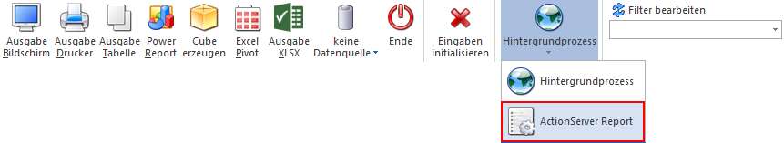
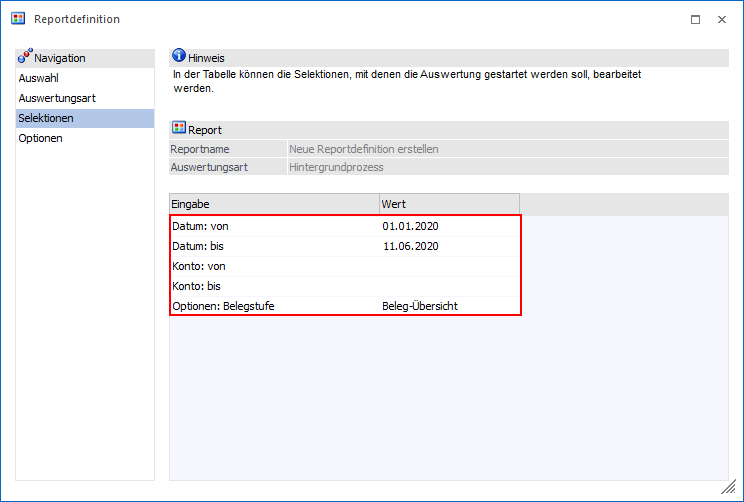
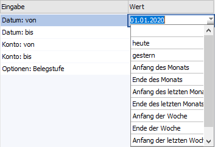
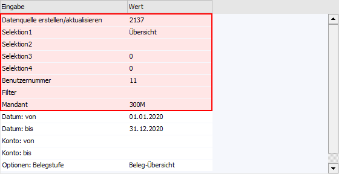
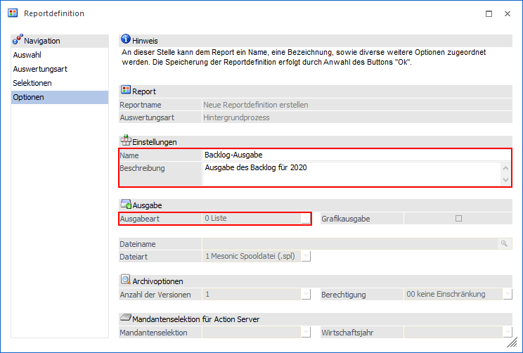
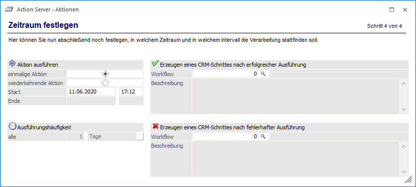
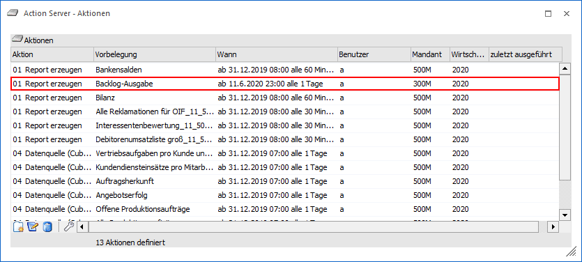
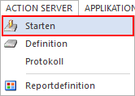
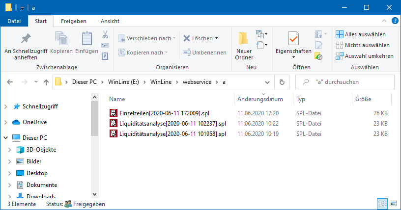

Wird in der gewünschten Auswertung der Button "ActionServer Report" gedrückt, so werden die Einstellungen des Fensters an die Reportdefinition und den ActionServer übergeben. In diesem kann der Zeitpunkt der Aufbereitung / Bereitstellung der Daten definiert werden.
Hinweis
Um einen zeitversetzten Hintergrundprozess durchzuführen, muss eine ActionServer-Lizenz vorliegen.

In dem Fenster "Reportdefinition" werden nach Anwahl des Buttons "ActionServer Report" alle in der Auswertung genutzten Selektionsmöglichkeiten dargestellt und können editiert werden.

Hinweis - Selektionsfelder
Handelt es sich um ein Datumsfeld, so stehen diverse variable Vorgaben zur Verfügung.

Sollte ein Selektionsfeld nicht benötigt werden, so kann dieses durch Anwahl der Entf-Taste gelöscht werden. Hierbei ist zu beachten, dass das Löschen direkt passiert und nicht rückgängig zu machen ist.
Hinweis - Datenquelle
Wurde der Datenquellen-Button auf "Datenquelle erstellen/aktualisieren" gestellt, so werden in roten Unterlegung die Datenquellen-Angaben angezeigt. Diese sind rein informativ und könen nicht geämndert werden.

Mit dem Ribbon-Button "Vor" gelangt man in den nächsten Schritt "Optionen". Hier muss ein Name für die Reportdefiniton vergeben werden.
Hinweis
Abhängig davon, ob eine Datenquelle verwendet wird oder nicht, wird dynamisch das Feld "Ausgabeart" vorbelegt.

Durch Anwahl des Buttons "Ok" wird die Definition gespeichert, geschlossen und das Fenster "Action Server - Aktionen" geöffnet. Die Aktion ist automatisch mit der gerade angelegten Reportdefinition verknüpft. Im letzten Schritt kann ein Zeitraum festgelegt werden.

Folgende Optionen stehen hier zur Auswahl:
ü einmalige Aktion
Diese Aktion
wird nur einmalig ausgeführt und danach gestoppt.
ü wiederkehrende Aktion
Mit
dieser Option kann entschieden werden, dass diese Aktion mehrmalig in einem
gewissen Zeitraum mit selbst bestimmter Ausführungshäufigkeit ausgeführt
wird.
ü Start
Hier wird das Datum und
die Uhrzeit angegeben, wann der Action Server mit der Verarbeitung beginnen
soll.
ü Ende
Diese Option ist nur bei
wiederkehrenden Aktionen aktiviert. Mit diesem Datum und der eingetragenen
Uhrzeit wird die wiederkehrende Aktion gestoppt.
ü Ausführungshäufigkeit
Es kann
eingestellt werden in welchen Takt diese Auswertung vom ActionServer
abgearbeitet werden soll.
ü Erzeugen eines CRM-Schrittes nach
erfolgreicher Ausführung
Hier kann ein Workflow und eine Beschreibung
hinterlegt werden, welche geschrieben werden soll, wenn diese Ausführung
erfolgreich beendet wurde.
ü Erzeugen eines CRM-Schrittes nach
fehlerhafter Ausführung
Hier kann ein Workflow und eine Beschreibung
hinterlegt werden, welche geschrieben werden soll, wenn die Aktion durch den
Aktion Server nicht ausgeführt werden konnte.
Hinweis
Für das Schreiben eines Workflowschrittes ist eine gültige CRM-Lizenz notwendig.
Durch Anwählen des Buttons "Ok" gelangt man ins Übersichtsfenster der "Action Server - Aktionen".

Wenn der Action Server dann gestartet wird, wird die Aktion zur Auswertung nach den gewünschten Selektionen zur angegeben Zeit gestartet.

Handelt es sich bei der Ausgabe um einen Ausdruck, so wird dieser im WebService-Verzeichnis des Benutzers abgestellt.
